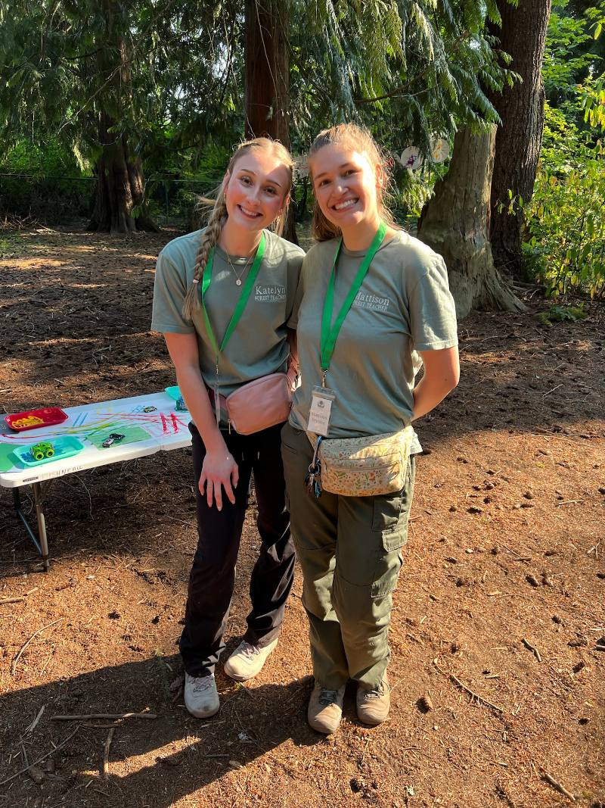

Kids being kids in the forest.
This fall we’re turning over logs to see who lives underneath and stirring up leaf soup in the mud kitchen. For ages 1 to 3, and you’re right there with them.
Wednesdays · 9:30 to 11:00 AM
McCollum Park, Everett, WA
Little Roots is a weekly outdoor class where you and your child explore, play, and learn together in the forest.
A few spots open right now
A 90 minute class every Wednesday, year round, rain or shine.
Two teachers and 15 families in each class.
Join anytime! Your first month is prorated.

Meet your teachers
Hello! I’m Mattison. I’m a licensed Washington State teacher, a former preschool and middle school science teacher, and a mom who wanted a place to learn outside with my daughter. My teaching partner Katelyn and I are both Pediatric CPR and First Aid certified, and we’ll be right there with you every Wednesday.
More about us →“Little Roots has been an opportunity to push my toddler out of his comfort zone and introduce them to nature in an age-appropriate, play-based environment. He has been able to explore art and sensory play, work on his fine and gross motor skills, and develop his confidence and I’ve been able to watch it all happen.”
What a Morning Looks Like
Times are approximate. We follow a rhythm, not a clock.
Arrival & Free Explore
Stations are already set up when you walk in. Your child can start exploring right away while everyone settles in.
Opening Circle
Five minutes together. We ring the chime and sing our name song so every child hears their name. There’s a question of the day for the grown-ups too, and it has sparked many great conversations.
Discovery Stations
Six to eight stations, like the mud kitchen, playdough, sensory bins, art, and small world trays. Your child moves freely between them. Nobody tells them where to go or when to switch.
Snack Time
Snack is family provided. We have a handwashing station with soap, plus hand sanitizer.
Morning Gathering
Snacks are welcome in circle. We sing, read a short story tied to the day’s nature focus, and say good morning to Pip, our chickadee puppet. Then a movement song to shake out the wiggles before the trail.
Nature Walk
A short walk on the same forest loop every week, on purpose. Coming back to the same place helps kids notice what has changed. Each week has a guiding question, like “Who lives under here?” Depending on the week, we might bring hand lenses, collection cups, or the nature frames the kids decorated at the stations.
Closing Circle
We circle up right on the trail, sing The More We Get Together with ASL signs, and say goodbye to the forest together.
“We are loving the creative and varied stations each week! Everything is very thoughtfully planned. My little guy looks forward to it each week.”
A Peek at the Stations
A few setups from recent Wednesdays. They change every week with the season.


No experience needed. Just bring your boots.
Every family starts somewhere.